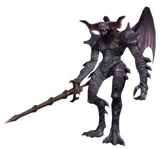
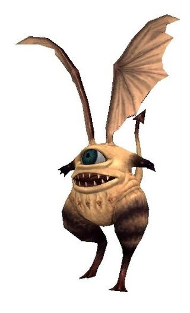
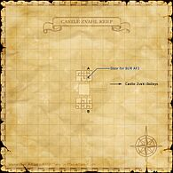
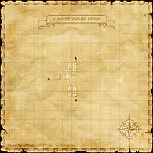
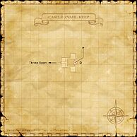

Description Castle Zvahl Keep is a dungeon in Valdeaunia .
Table of Contents Connections Involved in Quests / Missions Notorious Monsters Name Level Drops Steal Family Spawns Notes Baron Vapula 68 Demon Skull Demon Horn Scroll of Aeroga III Scroll of Thundaga II — 
DemonsImage source — A, L, S, Sc Baronet Romwe 68 Demon Horn Demon's Axe Demon Skull — DemonsImage source — A, L, S, Sc Count Bifrons 68 Demon Horn Demon Skull Goshisho's Scythe Scroll of Absorb-DEX — DemonsImage source — A, L, S, Sc Viscount Morax 68 Dark Spirit Pact Demon Horn Demon Skull — DemonsImage source — A, L, S, Sc
Regular Monsters Name Level Drops Steal Family Spawns Notes Goblin's Bat 40-42 — — Giant BatsImage source — L, H Demon's Elemental 45-53 — — ElementalsImage source — L Evil Eye 46-48 Ahriman Lens Ahriman Tears Ahriman Tears 
AhrimanImage source — A, L, S, H Elder Quadav 47-49 Quadav Helm Mythril Beastcoin QuadavImage source — A, L, H Emerald Quadav 47-49 Quadav Helm Mythril Beastcoin QuadavImage source — A, L, H Goblin Poacher 47-49 Cuir Gloves Crossbow Bolt GoblinsImage source — A, L, S Goblin Reaper 47-49 Scroll of Absorb-VIT Mythril Beastcoin GoblinsImage source — A, L, S Goblin Robber Image source 47-49 Cuir Trousers — Goblins — A, L, S Goblin Trader 47-49 Cuir Gloves Goblin Armor Goblin Mask Mythril Beastcoin GoblinsImage source — A, L, S Iron Quadav 47-49 Quadav Helm Mythril Beastcoin QuadavImage source — A, L, H Orcish Bowshooter 47-49 Cuir Bandana Cuir Gloves Cuir Highboots Cuir Trousers Mythril Beastcoin OrcsImage source — A, L, S Orcish Footsoldier 47-49 Silver Greaves Silver Hose Silver Mail Silver Mask Silver Mittens Soiled Letter Mythril Beastcoin OrcsImage source — A, L, S Orcish Gladiator 47-49 Iron Mittens Iron Subligar Leggings Padded Cap Mythril Beastcoin OrcsImage source — A, L, S Orcish Trooper 47-49 Chain Mittens Cuisses Gold Orcmask Iron Mask Plate Leggings Sallet Scroll of Flash Mythril Beastcoin OrcsImage source — A, L, S Spinel Quadav 47-49 Quadav Helm Mythril Beastcoin QuadavImage source — A, L, H Yagudo Conquistador 47-49 Cuir Trousers Scroll of Doton: Ni Scroll of Huton: Ni Scroll of Hyoton: Ni Scroll of Katon: Ni Scroll of Raiton: Ni Scroll of Suiton: Ni Yagudo Feather Yagudo Necklace Mythril Beastcoin YagudoImage source — A, L, S Yagudo Lutenist 47-49 Scroll of Blade Madrigal Scroll of Dragonfoe Mambo Yagudo Feather Yagudo Necklace Mythril Beastcoin YagudoImage source — A, L, S Yagudo Prior 47-49 Yagudo Feather Yagudo Necklace Mythril Beastcoin YagudoImage source — A, L, S Yagudo Zealot 47-49 Cuir Trousers Mythril Beastcoin YagudoImage source — A, L, S Goblin Bouncer 50-52 Goblin Helm Goblin Mail Gold Beastcoin Mythril Leggings Mythril Beastcoin GoblinsImage source 9 A, L, S Goblin Enchanter 50-52 Brass Ingot Platinum Ingot Zvahl Chest Key Mythril Beastcoin GoblinsImage source 3 A, L, S Goblin Hunter 50-52 Goblin Armor Goblin Mask Gold Beastcoin Zvahl Chest Key Raptor Trousers Crossbow Bolt GoblinsImage source 9 A, L, S Gold Quadav 50-52 Quadav Helm Mythril Beastcoin QuadavImage source — A, L, H Orcish Predator 50-52 Cuir Bandana Cuir Gloves Cuir Highboots Cuir Trousers Mythril Beastcoin OrcsImage source — A, L, S Mythril Quadav 50-52 Mythril Breastplate Mythril Sallet Quadav Helm Mythril Beastcoin QuadavImage source — A, L, H Orcish Veteran 50-52 Mythril Cuisses Mythril Leggings Mythril Sallet Mythril Gauntlets Mythril Beastcoin Beastcoin OrcsImage source — A, L, S Orcish Warchief 50-52 Scroll of Flash — OrcsImage source — A, L, S Orcish Zerker 50-52 Scroll of Absorb-AGI Scroll of Absorb-VIT — OrcsImage source — A, L, S Steel Quadav 50-52 Quadav Helm Scroll of Flash Mythril Beastcoin QuadavImage source — A, L, H Topaz Quadav 50-52 Moccasins Quadav Helm Scroll of Reraise Scroll of Auspice White Slacks Mythril Beastcoin QuadavImage source — A, L, H Yagudo Abbot 50-52 Moccasins Zvahl Chest Key Scroll of Auspice Scroll of Reraise White Cloak White Slacks Yagudo Feather Yagudo Holy Water Yagudo Necklace — YagudoImage source — A, L, S Yagudo Chanter 50-52 Scroll of Carnage Elegy Scroll of Foe Requiem V Scroll of Gold Capriccio Yagudo Feather Yagudo Necklace Mythril Beastcoin YagudoImage source — A, L, S Yagudo Inquisitor 50-52 Raptor Gloves Raptor Ledelsens Yagudo Feather Yagudo Necklace Mythril Beastcoin YagudoImage source — A, L, S Yagudo Sentinel 50-52 Zvahl Chest Key — YagudoImage source — A, L, S Morbid Eye 52-53 Ahriman Lens Ahriman Tears Ahriman Wing Ahriman Tears AhrimanImage source — A, L, S, H Demon Knight 52-56 Behemoth Leather Missive Scroll of Absorb-AGI Scroll of Absorb-INT Scroll of Absorb-VIT Zvahl Chest Key — DemonsImage source — A, L, S, Sc Demon Pawn 52-56 Behemoth Leather Missive Zvahl Chest Key — DemonsImage source — A, L, S, Sc Demon Warlock 52-56 Ice Spirit Pact Zvahl Chest Key — DemonsImage source — A, L, S, Sc Demon Wizard 52-56 Zvahl Chest Key — DemonsImage source — A, L, S, Sc Deadly Iris 55-56 Ahriman Lens Ahriman Tears Ahriman Wing Zvahl Chest Key Ahriman Tears AhrimanImage source 6 A, L, S, H
Maps
Map 2 Enlarge Map 3 Enlarge Map 4 Enlarge Story walkthroughs in this area References External references describe their own server or retail rules. Documented Zenith changes take precedence.
Map credits: Map 1 — HorizonXI Wiki · Map 2 — HorizonXI Wiki · Map 3 — HorizonXI Wiki · Map 4 — HorizonXI Wiki . Original game maps © SQUARE ENIX; redrawn maps retain the credited authorship and license.
Additional level-75 reference 
Castle Zvahl Keep Map 1 
Castle Zvahl Keep Map 2 Castle Zvahl Keep Map 3
The central keep of the ancient ruins in Xarcabard where the Shadow Lord gathered his Beastmen army a little more than 20 years ago. The Allied Forces of Altana defeated the Beastman Horde in Xarcabard at the end of the Crystal Wars , but rumors of the Shadow Lords rebirth persist.
Connecting Areas

Castle Zvahl Keep Map 4 Castle Zvahl Baileys at (J-8)Throne Room at (G-7)Escapes to: Xarcabard (D-8)
NPCs Found Here
A = Aggressive; NA = Non-Aggresive; L = Links; S = Detects by Sight; H = Detects by Sound;HP = Detects Low HP; M = Detects Magic; Sc = Follows by Scent; T(S) = True-sight; T(H) = True-hearingJA = Detects job abilities; WS = Detects weaponskills; Z(D) = Asleep in Daytime; Z(N) = Asleep at Nighttime
Mobs Found Here
A = Aggressive; NA = Non-Aggresive; L = Links; S = Detects by Sight; H = Detects by Sound;HP = Detects Low HP; M = Detects Magic; Sc = Follows by Scent; T(S) = True-sight; T(H) = True-hearingJA = Detects job abilities; WS = Detects weaponskills; Z(D) = Asleep in Daytime; Z(N) = Asleep at Nighttime
Adapted from Eden Wiki: Castle Zvahl Keep · Contributors and history · CC BY-SA 4.0 . Revision 45546. Layout, links and optional background text adapted for Zenith.